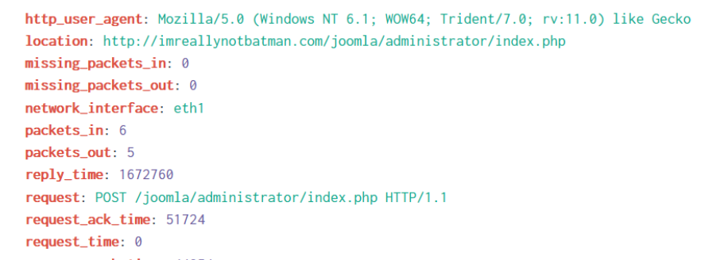
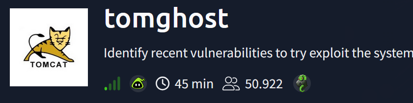

Projects
Hands-on projects demonstrating practical skills.

BT-QuickCheck
A fast, no-hassle Linux one-liner to baseline a host from a blue team perspective
View Code


APIWizards Room Writeup
Investigated a security breach on a Linux machine: users, source code, logs, attack timeline.
View Writeup
Disk Analysis & Autopsy room Writeup
Performed a manual analysis of the artifacts discovered by Autopsy.
View Writeup

tomghost Room Writeup
Exploited the tomghost vulnerability to gain initial access and escalated privileges on the server.
View Writeup

Recovery Room Writeup
Unconventional CTF about hacking back into the linux server and removing malware.
View Writeup
Hacker vs Hacker Room Writeup
Someone has compromised this server already! Can you get in and evade their countermeasures?
View Writeup